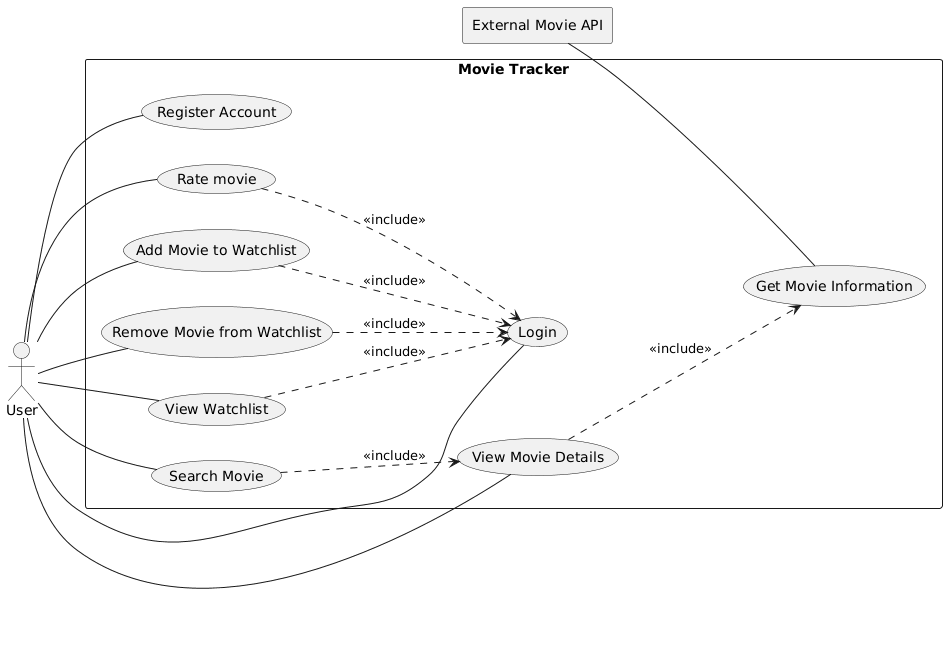

01 - Introduction and goals
Movie Tracker is a web application designed to help users search for movies, explore movie details, and manage a personal watchlist. The application integrates with the external TMDB (The Movie Database) API to retrieve movie information, ratings, and reviews from users who have watched the movies.
The application allows anonymous users to search for movies and access detailed movie information without authentication. However, authenticated users gain additional functionality, such as maintaining a personal watchlist where they can save and manage movies they have watched or want to watch in the future.
The primary goals of the Movie Tracker project are:
G1 – Easy Movie Discovery
Provide users with a simple and intuitive way to search for movies and access detailed movie information.
G2 – Integration with External Movie Data
Use the TMDB API as a reliable external source for:
Movie metadata
G3 – Personalized Watchlist Management
Allow authenticated users to create and manage a personal watchlist of movies they have watched or plan to watch.
G4 – Lightweight and Maintainable Architecture
Develop a lightweight application architecture using:
Python backend services
SQLite database for persistence
TanStack/React frontend for a responsive user experience
G5 – Public Access to Movie Information
Enable non-authenticated users to browse and explore movie information without requiring login credentials.
G6 – Secure User Authentication
Protect user-specific features, such as watchlist management, through user authentication and authorization mechanisms.
1.1 Requirements

Id |
Requirements |
Explanation |
|---|---|---|
F1 |
Register Account |
|
F2 |
Login |
|
F3 |
Search Movie |
|
F4 |
View Movie Details |
|
F5 |
View Watchlist |
|
F6 |
Add Movie to Watchlist |
|
F7 |
Remove Movie from Watchlist |
1.2 Quality goals
Prio |
Quality goals |
Description |
|---|---|---|
1 |
Usability |
Users should be able to navigate and search for movies without complexity |
1 |
Reliability |
The application should consistently retrieve and display movie data |
2 |
Maintainability |
The code should remain modular and easy to extend |
3 |
Security |
User authentication and watchlist access must be protected |
1.3 Stakeholders
Role |
Contact |
Expectations |
|---|---|---|
End users |
- |
Search movies, view ratings and reviews, manage watchlists easily |
Developer |
- |
|
TMDB API |
- |
Movie tracker should avoid excessive or unnecessary requests, respect rate limits and API usage policies, and ensure that API calls do not negatively impact the availability or performance of TMDB services |
Teacher |
- |
Run the project without any issue |